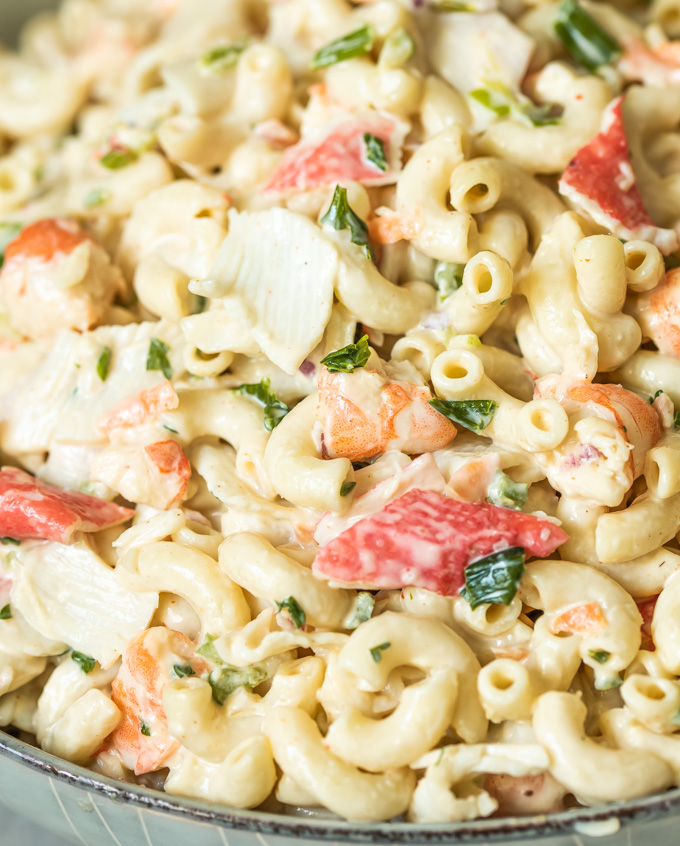

Macaroni salad is a delicious dish that can be used either as a main dish or a side dish. It's best served chill, however, you can enjoy it straight out of the fridge shall you have leftover.
The skill required to make Macaroni Salad is pretty minimal. You need to know how to use a knife to cut veggies, cook macaroni noodles, and use measuring tools.